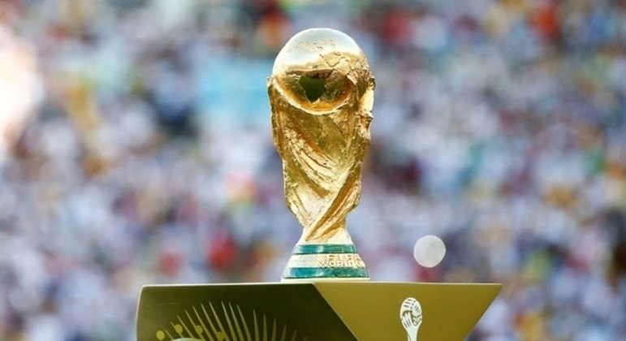

O Brasil é o maior campeão da história da Copa do Mundo de Futebol, com cinco títulos conquistados. Sua trajetória nas Copas é marcada por talento, emoção e um estilo de jogo que encantou o mundo. Desde a primeira edição do torneio, em 1930, a Seleção Brasileira esteve presente em todas as edições, sendo o único país com esse feito. Ao longo das décadas, o Brasil revelou craques inesquecíveis e construiu uma identidade futebolística reconhecida internacionalmente pelo toque de bola refinado, criatividade e paixão.
O primeiro título veio em 1958, na Suécia, quando o mundo conheceu um jovem chamado Pelé, com apenas 17 anos, e o genial Garrincha. A seleção brasileira conquistou o campeonato com uma goleada por 5 a 2 sobre os donos da casa, e marcou o início de uma era de ouro para o futebol brasileiro. Apenas quatro anos depois, em 1962, no Chile, o Brasil voltou a vencer a Copa, tornando-se bicampeão mundial. Mesmo com Pelé machucado durante o torneio, Garrincha assumiu o protagonismo e liderou o time rumo à vitória na final contra a Tchecoslováquia.
Em 1970, no México, o Brasil conquistou seu terceiro título e ficou definitivamente com a taça Jules Rimet. Aquela seleção é considerada por muitos como a melhor de todos os tempos, com um futebol vistoso, ofensivo e recheado de craques como Pelé, Tostão, Rivelino, Jairzinho e Carlos Alberto Torres. Na final, o Brasil derrotou a Itália por 4 a 1, consolidando-se como uma potência do futebol mundial.
Depois de um jejum de 24 anos, o Brasil voltou a levantar a taça em 1994, nos Estados Unidos. Sob o comando do capitão Dunga e com atuações decisivas de Romário e Bebeto, a seleção brasileira venceu a Itália nos pênaltis após um empate sem gols no tempo regulamentar. Foi uma conquista marcada pela eficiência tática e pela superação.
O quinto título chegou em 2002, na Copa do Mundo realizada na Coreia do Sul e no Japão. Comandada por Luiz Felipe Scolari, a equipe contava com um trio ofensivo brilhante: Ronaldo, Rivaldo e Ronaldinho Gaúcho. Ronaldo, inclusive, foi o artilheiro do torneio com 8 gols e brilhou na final contra a Alemanha, marcando os dois gols da vitória por 2 a 0. Aquela campanha foi perfeita: sete jogos e sete vitórias.
A história da Seleção Brasileira nas Copas do Mundo é muito mais do que uma sequência de títulos. Ela representa a alma do futebol, o talento natural do povo brasileiro e a capacidade de emocionar gerações com arte dentro de campo. O Brasil não apenas venceu mais que qualquer outro país; ele deixou uma marca eterna no coração dos torcedores e na história do esporte.
